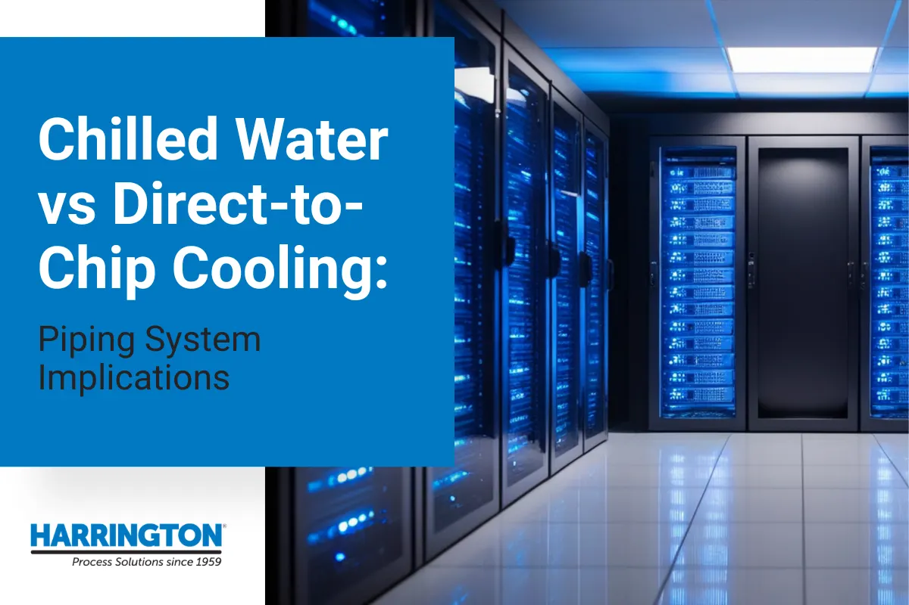

Chilled water vs direct-to-chip cooling: piping system implications
Two ways to cool an AI data hall, and what each one asks of the pipe, the joints, and the water chemistry.

The cooling architecture you pick this quarter is the piping you live with for 20 years.
The rack density number lands on your desk and everything downstream changes. A traditional enterprise hall ran 5 to 10 kW per rack and air handled it comfortably. The AI build you are scoping now specifies 50 kW, 100 kW, or more per rack. At this density, air alone cannot remove that much heat. So the decision arrives: stay with chilled water and air handlers, move to direct-to-chip liquid cooling, or run some hybrid of the two.
Most of the conversations around that decision happen at the IT and mechanical-plant level. What gets discussed far less is that the choice subtly defines your entire piping specification. Pipe material, diameter, pressure class, joining method, valve automation, containment strategy, and instrumentation all follow from it, and all of them are difficult and expensive to change once the slab is poured and the hall is live.
The stakes are asymmetric in a way that should shape how carefully you approach this:
- Undersize the distribution and you cap the facility. Pipe diameter set for today's density becomes the ceiling on tomorrow's. Retrofitting a larger header through an occupied data hall costs far more than installing it correctly the first time.
- Pick the wrong joining method and you inherit leak risk. Every joint is a potential leak point, and a coolant leak above a live server row is not a maintenance ticket. It is an incident with equipment loss and downtime attached.
- Miss the material margin and you get slow failure. Glycol concentration, return-water temperature, and pressure at temperature all interact. A material that works at commissioning can degrade over years in service.
The good news: the facility-side piping for both architectures is well-understood thermoplastic process piping. Once you see how each system actually distributes fluid, the specification decisions become straightforward engineering.
The facility side is more familiar than it looks.
There is a persistent misconception worth clearing up early, because it changes who you need to talk to. Engineers often assume that direct-to-chip liquid cooling is exotic, proprietary, OEM-controlled infrastructure end to end. The server-side loop genuinely is. The facility side is not. It is supply and return headers, isolation valves, balancing valves, flow meters, and temperature sensors, built from the same thermoplastic materials that have run chilled water and industrial process loops for decades.
That is where Harrington works. Our specialty group supports data center mechanical teams on both architectures, with the full material range behind the recommendation: CPVC and PVC for chilled water distribution, PP-R for fusion-joined critical headers, PVDF for high-purity adjacent service, plus double containment systems, actuated valve packages, and the instrumentation that ties the loop back to your BMS.
Because we support all of it, the recommendation is driven by your operating conditions rather than by a single product line. If your loop is a straightforward 45°F chilled water run and PVC Sch. 80 is the right answer, that is the answer you will get.
How each architecture distributes fluid
Chilled water distribution
How the loop works. The architecture most operators already run: a chiller plant produces chilled water, a cooling tower or dry cooler rejects heat, and a facility water loop distributes to CRAH or CRAC units positioned in or around the data hall. Those units transfer heat from the air to the water, and the return loop carries it back to the plant. Air still does the last few feet of work, moving heat from the server to the coil.
Typical operating parameters. Supply water in the 42°F to 45°F range is conventional, with return typically 10°F to 15°F higher depending on load and control strategy. Glycol appears in outdoor circuits, economizer loops, and anywhere freeze protection is required, commonly at 30% to 40% propylene glycol.
What the piping requires. Large-diameter mains and branch runs feeding distributed air handlers, sized against velocity limits rather than pressure alone. CPVC Sch. 80 is a common and appropriate default for primary distribution, with PVC Sch. 80 workable in secondary and lower-criticality runs. Solvent cement joining is standard, isolation valves serve each air handler for maintenance without a hall shutdown, and balancing valves distribute flow evenly across units.
Where it reaches its limit. Air is the constraint, not the water. Above roughly 30 kW to 50 kW per rack, moving enough air through the rack to carry the heat away becomes impractical: fan power climbs, acoustics degrade, and thermal gradients open up inside the cabinet.
Direct-to-chip liquid cooling
How the loop works. Liquid reaches the heat source instead of stopping at a coil. Cold plates mount directly to CPUs and GPUs, and a coolant distribution unit (CDU) sits between the building and the rack. The CDU receives facility chilled water on one side, and on the other it pumps and conditions a separate coolant stream out to the cold plates, returning warmed fluid back into the facility loop.
The two loops, and why the distinction matters. This is the point most engineers new to liquid cooling miss. The facility loop runs from the plant to the CDU and back. It is conventional thermoplastic process piping, it is designed and specified by the mechanical team, and it is where Harrington's product range lives. The server-side loop runs from the CDU out to the cold plates. It is typically OEM-managed, chemistry-controlled, and delivered as part of the IT solution. The two are hydraulically isolated so that server-side fluid chemistry stays clean and building water never touches the hardware.
Typical operating parameters. Facility supply water to a CDU is often warmer than a traditional chilled water loop, since cold plates transfer heat far more efficiently than air coils. Warmer supply reduces or eliminates mechanical chilling hours and raises return temperatures, which is also what makes heat recovery viable.
What the piping requires. Supply and return runs to each CDU, commonly 2 in to 6 in at row level with larger hall-level headers upstream. Row distribution manifolds feed multiple CDUs from a common header, requiring branch sizing and flow balancing. Isolation valves at every CDU feed are essential so a single unit can be serviced without draining a row. Automated shutoff valves tied to leak detection are increasingly specified as standard rather than as an upgrade. Fusion-joined PP-R is a growing choice for critical headers precisely because a fused joint has no adhesive layer and no discrete leak path.
Hybrid: rear-door heat exchangers and in-row cooling
How they work. Between full air and full liquid sits the transitional tier most colocation operators are deploying today. A rear-door heat exchanger replaces the cabinet's back door with a water-cooled coil, capturing heat as air exits the rack. In-row cooling places water-cooled units between cabinets, shortening the air path dramatically.
What the piping requires. Both have chilled water systems in the DNA of their piping, just distributed differently. Instead of a handful of large runs to perimeter CRAH units, you run many smaller branches into the rack rows themselves, which means more branch connections, more isolation points, and more flexible connections at each unit. Because the piping now lives inside the row rather than at the perimeter, containment and leak detection get more attention.
Where they fit. Rear-door and in-row let an operator raise density substantially without committing the facility to full liquid cooling, which is why they dominate retrofit projects and mixed-tenancy colocation halls.
Piping requirements compared
| Consideration | Chilled water (CRAH/CRAC) | Hybrid (rear-door / in-row) | Direct-to-chip |
|---|---|---|---|
| Practical rack density | Up to ~30 kW | ~30 to 50 kW | 50 kW to 100 kW+ |
| Facility supply temp | ~42°F to 45°F | ~45°F to 60°F | Warmer |
| Typical pipe material | PVC or CPVC Sch. 80 | CPVC Sch. 80 | CPVC Sch. 80 or PP-R |
| Distribution pattern | Fewer large runs to perimeter units | Many small branches into rows | Headers to row-level CDU manifolds |
| Typical branch size | Large mains, sized to load | Small branches per unit | 2 in to 6 in at row level |
| Joining method | Solvent cement | Solvent cement; fusion for critical runs | Fusion preferred on critical headers |
| Glycol exposure | Common in outdoor/economizer loops | Common | Common; verify concentration |
| Leak consequence | Moderate; piping at perimeter | Elevated; piping in the row | High; piping at the rack |
| Containment | Selective | Recommended in-row | Frequently specified |
| Valve automation | Balancing and isolation | Isolation per unit | Automated shutoff per CDU feed |
| Maintenance access | Service at perimeter | Service within the row | Isolate individual CDU |
Which architecture fits your facility
Hyperscale and AI factory build-outs go direct-to-chip. At 50 kW and above per rack there is no practical alternative, and these operators are designing for liquid from day one rather than retrofitting into it.
Colocation trends hybrid. Mixed tenancy means mixed density, and rear-door or in-row cooling lets an operator serve a high-density tenant in one row without rebuilding the hall. Many are also running facility piping capable of supporting future CDU deployment.
Enterprise data centers largely stay on chilled water. Densities are moderate, the existing plant is amortized, and the operational case for liquid has not yet arrived. The forward-looking move is sizing new distribution with headroom for later conversion.
Edge facilities use rear-door heat exchangers or conventional chilled water. Constrained footprints and limited to no on-site staffing favor simpler, well-understood systems.
How Harrington supports both architectures
The material logic is consistent across all three approaches.
- CPVC Sch. 80 for primary chilled water supply and return, rated well above typical loop temperatures with compatibility to 50% glycol at rated conditions.
- PVC Sch. 80 for secondary distribution and lower-criticality runs where temperature and pressure allow, at meaningful cost savings.
- PP-R for fusion-joined critical headers and above-slab runs where a monolithic joint with no adhesive layer is worth the installation premium, with fusion tool rental available through our branch network.
- PVDF where high-purity adjacency or aggressive chemistry enters the picture.
- Double containment systems for runs above active server rows, under raised floors, and at CDU connections, with point or distributed leak detection.
- Actuated valve packages for zone isolation, automatic shutoff on leak detection interlock, and flow balancing, assembled and configured to your control signal.
- Instrumentation including flow meters, temperature sensors, pressure gauges, and BTU metering for efficiency and heat-recovery reporting.
Three steps to a specified cooling loop
- Share your design conditions. Send rack density, cooling architecture, supply and return temperatures, glycol type and concentration, flow rates, and any code or containment requirements. A line list or mechanical drawing set works just as well.
- Get an engineering and material review. Our specialists confirm material compatibility at your actual temperature and glycol concentration, verify sizing against velocity limits, and recommend joining method, containment strategy, valve automation, and instrumentation as a coordinated package.
- Receive your quote and project support. A quote tied to the specific products for your build, backed by regional branch inventory, fusion equipment rental where the joining method calls for it, and field support through installation.
Get the piping right before the slab goes down.
The cooling architecture decision is reversible on paper and expensive in concrete. Pipe diameter, material, joining method, and containment strategy are all far cheaper to specify correctly now than to retrofit into a hall that is carrying live load. A facility sized and specified properly runs quietly for 20 years. One that was not becomes a capacity ceiling, a leak risk, and a recurring line item in the maintenance budget.
Whether you are staying with chilled water, moving to direct-to-chip, or building a hybrid hall that has to support both, our data center specialists will confirm the right material, sizing, joining method, and containment approach for your actual operating conditions.
We always recommend consulting your Harrington sales representative for compatibility, as temperature, chemical, and pressure ratings can vary by manufacturer.
Questions about your line? A specialist answers the phone around the clock.
Back to articles